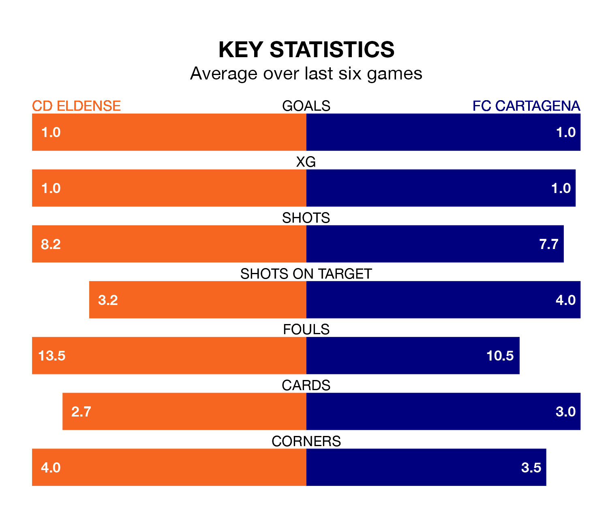

FC Cartagena travel to CD Eldense on late Friday in the Segunda División.
The visitors come into the game on the back of a win in their last match, having beaten Racing Club de Ferrol 2-1 at home, with goals from José Luis Muñoz León and Darío Poveda Romera.
Eldense, meanwhile, lost their last match, 3-1 against Mirandés, with their goal scored by Pedro Luis Capó Payeras.
With 39 goals in 30 games so far this season, Eldense are scoring more than average in the league with 1.3 goals per game. But they are conceding more than average too, letting in 40 goals at a rate of 1.3 per game.
Cartagena, meanwhile, are below average scorers, with 1.0 goal per game, compared to a league average of 1.1. They have conceded 1.4 goals per game.
The visitors are 17th in the table after 30 games, of which they have won nine and drawn seven, earning 34 points.
The home team are five places ahead of Cartagena in 12th, with 10 wins and 11 draws putting them on 41 points.
Eldense are in mixed form in the Segunda División, with two wins and two draws from their last six games.
With three wins and a draw over that period, Cartagena's form is slightly better – they have taken 10 points from 18, compared to Eldense's eight.
Friday's match will be refereed by Adrián Cordero Vega, who has taken charge of 15 Segunda División games so far this season, issuing one red card and booking 86 players. He has awarded six penalties.
The last Eldense game Cordero Vega refereed was a 1-0 away win against SD Huesca on October 7. His last Cartagena match was their 1-0 loss at home against Levante UD on August 25.
Updated: 15:10 (UTC), 15/03/24